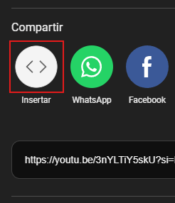
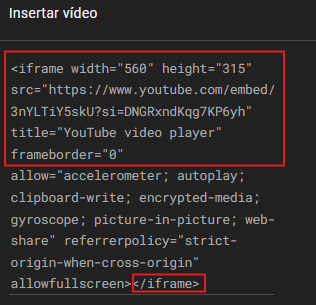
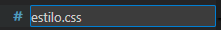

Proyecto Realizado por Laura.U, Ian y Coral
HTML BÁSICO
HTML, CSS y JS
Etiquetas principales
Cabecera HTML5 y su estructura
Etiquetas basicas del HTML
Etiquetas para crear tablas
Estructura del HTML
La estructura en HTML es bastante importante para mantener un orden y para que tanto nosotros como los demás puedan saber en qué parte del código estamos.
Aunque no sea obligatorio, pues hay páginas que usan muchos <div> o <span> para estructurar las páginas, el abuso de estos pueden dar a un código sucio y desordenado que para algunos podría llegar a ser ilegible, y por ello es mejor usar estas etiquetas sintácticas.
Las etiquetas sintácticas para estructurar el HTML son:
<main> → Establece el contenido principal de esa página en concreto y es la que indicará el contenido cambiante en función de la web.
<section> → Contiene una sección del contenido de la web
<article> → Contiene una información concreta de una sección, que tenga elementos replicables de forma independiente.
<aside> → Se utiliza para información que NO resulta de gran importancia, pero que igualmente se añade al tener relación con la información principal.
<header> → Ahí es donde se encuentra el título de una sección, artículo, etc.
<nav> → Se utiliza para separar un conjunto de enlaces.
<figure> → Se usa para elementos como imágenes o videos que son independientes de otros elementos de la página.
<blockquote> → Para añadir citas en bloques.
<pre> → Para crear bloques dedicados a mostrar código.
Ejemplo visual
 imagen provisional
imagen provisional
Insertar enlaces
Sintaxis: <a href="URL">Contenido del enlace</a>
Esta sintaxis crea un enlace, pero poco sirve si no tiene nada que enlazar, por lo que tiene que venir acompañado del atributo href.
La URL dependerá de lo que queramos poner y a donde lo queremos dirigir.
Ejemplos:
<a href="http://www.manualweb.net">Enlace a una web</a>
Enlace que redirige a otra página externa
<a href="documento.html">Enlace a un documento</a>
Se añade un documento con el mismo nombre en el que pondremos href y podremos acceder a él por un elace
<a href="miimagen.png">Enlace a una imagen</a>
Ver una imagen en el html y que esta te lleve a un enlace
<a href="mimusica.mp3">Enlace a un audio</a>
Enlace a un archivo de sonido
<a href="documento.html#loquesea">Enlace a una parte de un documento</a>
En este tipo de enlaces en los que se usa # para enlazar ese elemento con otra parte de la página, añadiremos a la etiqueta en la que queremos redirigir <id=”...”./a> Este parámetro hace que pueda ser identificado por otras etiquetas siempre que estas quieran hacer referencia a este, por lo que a la hora de presionar el link, redirige a esa parte de la web en la que se encuentra el id.
HTML
<header>
<a href="#manolo">Texto hacia Manolo</a>
</header>
<article>Hola, soy Juan</article>
<article id="manolo">Hola, soy Manolo</article>
Muestra
Listas ordenadas <ol> y desordenadas <ul>
La etiqueta <ul> es un elemento de bloque utilizado para definir listas desordenadas (aquellas en las que el orden de los elementos no es relevante) mostradas con puntos a su izquierda, y la etiqueta <ol> es uno que define listas ordenadas, enumeradas del uno hasta el número de elementos que hayan.
Los elementos en ambos tipos de la lista se definen con el elemento <li>.
El elemento ul puede anidarse dentro de otro elemento ul para crear listas multinivel. Además, puede combinarse con el elemento ol para crear listas ordenadas y desordenadas mixtas.
HTML
<ol>
<li>Texto 1</li>
<li>Texto 2</li>
<ul>
<li>Texto 1</li>
<li>Texto 2</li>
<li>Texto 3</li>
</ul>
<li>Texto 3</li>
</ol>
Muestra
Insertar videos de youtube mediante <iframe>
1. Busca el video que te interesa poner en tu HTML y busca la sección "compartir" que hay debajo del título del video.

2. Selecciona el apartado de "Insertar" para ver el iframe con la URL del video específico.

3. Copia el código destacado que se muestra en la imagen, es lo esencial que hace que se pueda mostrar el iframe en la web.

<summary> + <details>
Se usa para crear secciones en las que al dar clic en el título <summary> de la sección, la información que se encontraba oculta, se muestra.
HTML
<details>
<summary>Título</summary>
<p>texto de ejemplo que estaría escondido hasta que
no des clic en el título.</p>
</details>
Muestra
Imágenes y GIFs con <img>
Sintaxis: <img src="foto.png" alt=”descripcion”>
La etiqueta  no se cierra porque es un elemento vacío (no tiene contenido en su interior), solo sirve para mostrar una imagen mediante el atributo src (source), que indica la ubicación de la imagen,y el parametro alt es para darle una descripcion a la imagen para perosnas que tengan alguna discapcidad visual, o para el caso en el que la imagen estér rota.
no se cierra porque es un elemento vacío (no tiene contenido en su interior), solo sirve para mostrar una imagen mediante el atributo src (source), que indica la ubicación de la imagen,y el parametro alt es para darle una descripcion a la imagen para perosnas que tengan alguna discapcidad visual, o para el caso en el que la imagen estér rota.
Creación del archivo y enlace de CSS
Creación del archivo CSS en VS Code
Al abrir la carpeta donde se guardarán los archivos dentro de VS Code, tendremos que darle al apartado de "nuevo archivo..." para crear una nueva hoja de código.

Posteriormente, le asignamos un nombre con la extensión .css que se relacione con el HTML.

Link que dirige hacia el CSS
Este link es un redireccionamiento a una hoja de estilos para darle un diseño más bonito, y se situará en la cabecera HTML (<head>).
La sintaxis sería la siguiente:
<link rel="stylesheet" href="estilo.css">
En este caso la hoja de estilos debería llamarse estilo.css, que, a diferencia del nombre del HTML, aquí no importa el nombre que le des al link siempre que tenga el mismo nombre que archivo
Aunque también se puede insertar el CSS en el propio HTML con <style>, pero por temas de organización es mejor tenerlo a parte.
Clases y formato
A la hora de estilar una página, se suele plantear un aspecto predeterminado para todos los elementos y usarlo de plantilla para toda la página, es por eso que se usan las etiquetas creadas en el CSS.
Pero, hay veces donde necesitamos que elementos concretos tengan un aspecto distinto, y por eso necesitaremos colocar unos atributos llamados class, al que le pondremos un nombre en concreto para que en el CSS pueda identificar cuándo aplicar esas características concretas.
Para eso, en el HTML se escribe class=”nombre-del-atributo” dentro CUALQUIER etiqueta, mientras, en el CSS se pone un .nombre-del-atributo
|
Sin clases |
Con clase |
| HTML |
<div></div> |
<div class="clase"></div> |
| CSS |
div{} |
.clase{} |
Ejemplo:
HTML
<div>Div 1</div>
<div>Div 2</div>
<div class="clase">Div 3</div>
CSS
div {
width:70px; text-align:center;
margin:5px;
background-color:blue; color:white;}
.clase{
background-color:pink; color:black;}
Muestra
Fondos y colores
Los fondos se pueden usar de distintas formas en función del diseño que le quieres dar.
Unos ejemplos de distintos fondos son:
Fondo de un color
background-color: blue;
HTML
<body>
<h1>texto</h1>
</body>
CSS
body{
background-color: blue;
}
Muestra
Fondo con una imagen
Estos fondos se formarán como un mosaico en función de un tamaño predeterminado que pondrá el navegador, por lo que es importante darle también el tamaño adecuado a ese fondo.
background-image: url(“enlace de la imagen”);
HTML
<body>
<h1>texto</h1>
</body>
CSS
body{
margin:0;
height:100px;
background-image:
url("imagen-gato.png");
}
Muestra
Fondo con degradado
Existen muchas formas de hacer degradados, pero la más sencilla es mediante un linear-gradient, que hace un degradado de arriba hacia abajo, usando porcentajes para indicar que color usar en cada parte del degradado.
background: linear-gradient(orange 0%, blue 100%)>;
HTML
<body>
<h1>texto</h1>
</body>
CSS
body{
margin: 0;
height: 300px;
background:
linear-gradient(orange 0%, blue 100%);
}
Muestra
Fuentes para el texto
Estos estilos se usan para el texto. Les puedes asignar una variedad bastante inmensa de estilos por la cantidad inmensa de etiquetas que existen, pero he aquí unos ejemplos:
HTML
<p>Texto con diseño predeterminado</p>
<p class="uno">Texto en rojo</p>
<p class="dos">
Texto con una fuente de 30px</p>
<p class="tres">
Texto con la fuente de texto Arial</p>
<p class="ct">Texto con fondo aqua</p>
<p class="ci">Texto en cursiva</p>
<p class="seis">Texto subrayado</p>
<p class="siete">
Texto con la fuente expandida</p>
CSS
.uno{color:red;}
.dos{font-size: 30px;}
.tres{font-family: Arial;}
.cuatro{background-color:aqua;}
.cinco{font-style: italic;}
.seis{text-decoration: underline;}
.siete{font-stretch:expanded;}
Muestra
Box model
Comprende cómo funciona el modelo de caja, que incluye el contenido, padding, border y margin, ya que es esencial para el diseño, en resumen estos parametros le dan forma a nuestros elementos dentro del html.
width: 300px; /*Ancho del contenido*/
height: 150px; /*Alto del contenido*/
margin: 15px; /*Margen entre la caja y el resto de elementos de la página*/
border: 2px solid red; /*Borde de la caja*/
padding: 20px; /*Espacio entre el borde de la caja y el texto*/
Se puede trabajar con distintas medidas y no solo con pixeles, tanto exactas como los cm, o relativas como el porcentaje (%); ejemplos son de las muchas más que hay.
La mejor forma de coomprender esta función es entrando a una página web cualquiera, dar clic derecho y seleccionar el apartado de "Inspeccionar" y verás a la derecha una sección en la que aparece todo el código fuente de la página junto a un recuadro que te señalará las distintas partes del box model.
Posiciones
Nuestra propiedad posición, tiene 5 valores:
position: static; /*estática*/
position: relative; /*relativa*/
position: absolute; /*absoluta*/
position: fixed; /*fija*/
position: sticky; /*pegada*/
Para mover nuestras cajas, usaremos cuatro propiedades que nos permitirá mover el elemento:
- top: 0; → Posiciona el elemento lo más arriba posible.
- bottom: 0; → Posiciona el elemento lo más abajo posible.
- left: 0; → Posiciona el elemento lo más a la izquierda posible.
- right: 0;→ Posiciona el elemento lo más a la derecha posible.
Cuanto más valor (en forma de px, cm, %...) le demos a esas propiedades, más alejado de esa posición estará.
Position static
Es el valor por defecto de todo elemento, hará que las propiedades top, bottom, left y right no tengan valor.
No tiene casos de uso a la hora de declararlo en el CSS.
Position relative
Este elemento estará infuido por las propiedades top, bottom, left y right, y también vendrá influido por las propiedades de la página (todos los contenedores que tenga anidado).
Si te mueves de la zona, el elemeno no te seguirá y se quedará en la misma posición en relación a la página.
Position absolute
Este tipo de posición funciona de forma similar a relative, pero NO viene influido por las propiedades de la página, solo únicamente del contenedor más cercano (su primer padre o antecesor) que tenga, si no, pues del contenedor raiz (html o body).
Position sticky
Esta posición funciona en base a un contenedor en específico, a si que, después de desplazarnos (scrollear) a cierto punto de nuestra pantalla, este valor se quedará fijado al final de un contenedor y no se moverá a no ser que volvamos a la parte de la página en la que se encuentra el contenedor.
Position fixed
Este valor fijará la posición de tu elemento en la pantalla incluso cuando te desplaces en el navegador fuera de un contenedor especifico.
Creación de figuras geometricas
Cuadrado y rectángulo
.cuadrado{
width: 100px;
height: 100px;
background: aqua;
}
Círculo
.circulo{
width: 100px;
height: 100px;
border-radius: 50%;
background: green;
}
Triangulo
.triangulo{
width: 0;
height: 0;
border-left: 100px solid orange;
border-top: 50px solid transparent;
border-bottom: 100px solid transparent;
}
Rombo
.rombo{
width: 100px;
height: 100px;
transform: rotate(45 deg);
background: pink;
}
{kind=link}